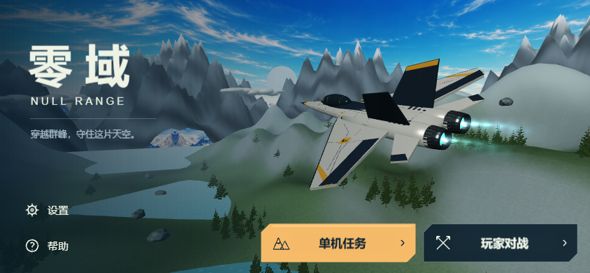
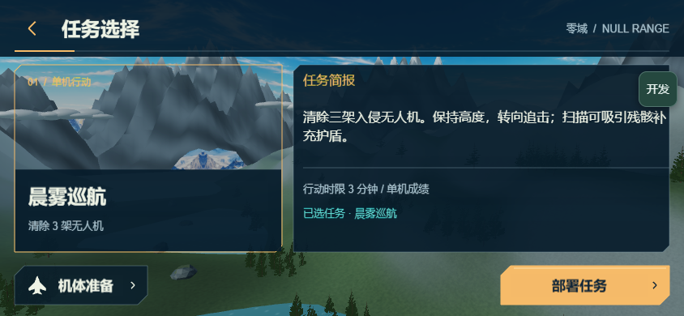
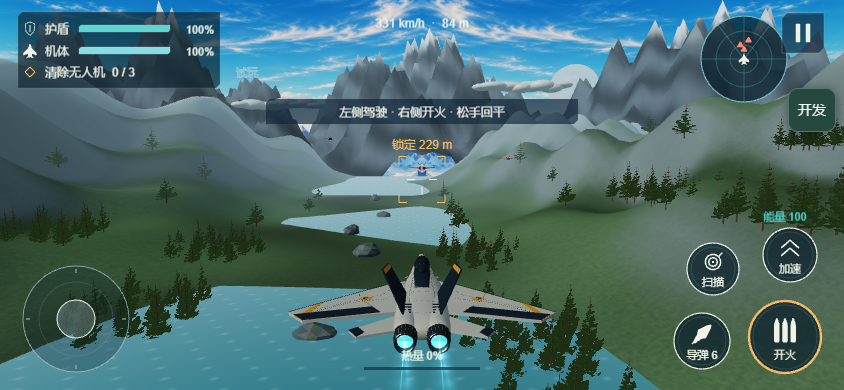
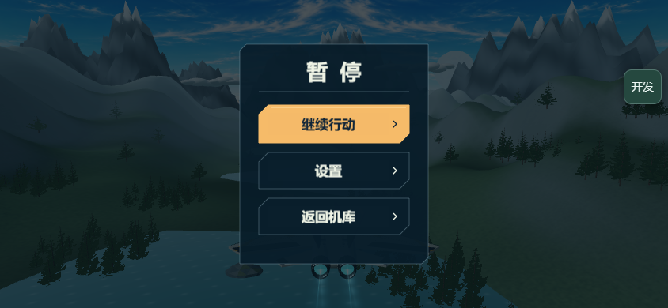
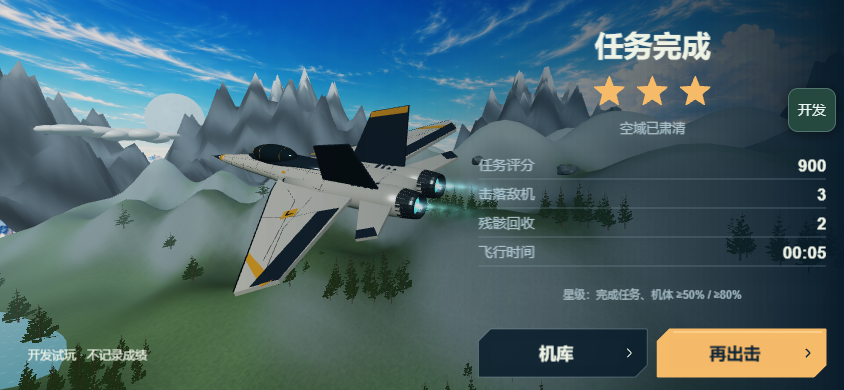
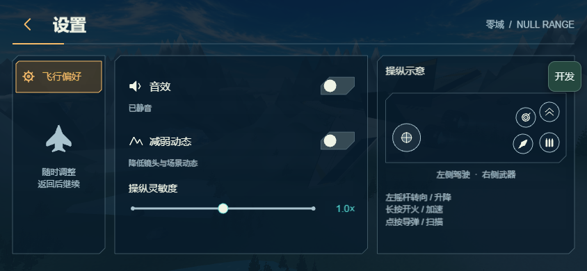

目标原图未修改；左侧仅用SVG视窗显示对应概念面板，右侧为真实Creator浏览器截图。不是最终上架材料。两侧保留各自宽高比；不能把功能与布局通过解释成场景美术通过。
sourceHash 76ecd618c5a1292f2b0648c67121fcff25126282115ececb7b839fd40883cde5
左品牌/右完整主机与右下双入口已实现；山谷、机体光影、岩壁与湖泊仍不合格。

按当前唯一真实任务生成卡片；不展示未来假关卡。真实内容数量与概念多卡布局不同。

边角HUD、真实雷达、圆形控件已实现；地形仍缺断崖/密林/连贯湖谷，不能据此通过视觉。

窄中央卡及返回设置仍暂停已验证；场景质量仍未达标。

左3D主机、右实际成绩和星级；没有虚构奖励。主机材质、布光与背景景深仍有差距。

三列偏好/真实设置/操作图；灵敏度为点击循环三档，非连续拖动滑块。字号和精细美术仍由主会话复核。
准备、帮助、对战未开放页与窄屏/竖持重点证据见 README.md；完整本地截图保留在reports/browser，不全部纳入Git。